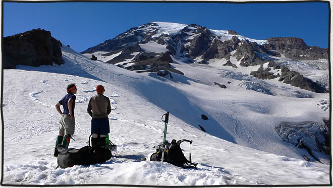

Mount Rainier via the Kautz Glacier route
posted Apr 12, 2009 Rob Doane and his brother Ryan and I climbed the Kautz Glacier route on Mount Rainier, July 22 – July 25. We summited on my birthday at noon on Thursday, July 24. Check out my ‘Climbing Washington Mountains’ employee destination guide on HomeAway.
Day 1 – Ascending through the clouds

Ascending up the Fan through the clouds We left the Paradise visitors center parking lot at 1:30pm on the 22nd. A marine cloud layer had settled in at the level of Paradise which limited visibility to a few hundred feet. We followed the trail to Panorama Point and found a good place to drop in on the Nisqually Glacier. Following a compass bearing we easily found the prominent feature called the fan. Ascending the fan brought us to perfectly clear cloudless blue skies. The cloud layer below looked now like a giant puffy carpet extending to the horizon with only Mount Adams in the distance poking through (the photo at the top of this article is just above the top of the fan). We continued along the top of the Wilson Glacier until reaching a ridge line below the turtle snow field. There was one other guided group of about 12 people that were setting up camp near us (I think it was an IMG group). We dug a nice little kitchen and set up our tent. Our first meal on the mountain was a fresh baked pizza in the Bank’s fry-bake pan (from NOLS). There would be no shortage of food as we brought enough for the 3 of us to last for 6 days even though we only planned on spending 3 days on the mountain.

Our first camp below the turtle snow field. Mount Adams is in the distance.

Ascending above the clouds on day 2.

Fresh baked pizza on the mountain.
Day 2 – Camp Hazard
Day 2 was a very short travel and rest day. It only took a couple of hours to ascend through the snow field known as the turtle to a point on the ridge below Camp Hazard. The water was running off of the glaciers at this point so melting snow wasn’t necessary for drinking water. I was a little envious when I later saw one of the IMG climbers pull a few tall boys (Rainier beer I think) out of a patch snow. Hot chocolate would have to do for tonight. Our plan was to wake up at midnight to start the summit push to ensure we didn’t encounter any late afternoon soft snow. I didn’t have any trouble falling asleep around 7pm.

High camp on the Kautz Glacier route
Summit Day

Top of the ice pitch After making coffee and having a quick breakfast we were climbing by 1am. The IMG group had already left and we stayed behind a little while knowing we would quickly catch up to a group of 12. We rappelled the rock step to the Kautz Glacier 20 feet below. Climbing for another hour or so the Kautz Glacier gradually steepened until we reached a point where we caught up with the guided group of climbers. At this point you can either continue straight up one pitch of 70°-75° ice or wind your way through some small ice seracs on the right. The guided group went right and after the last person had left we started to climb straight up. The climbing went fairly quickly and I only needed to place 3 ice screws. I retied Rob and Ryan so that I had plenty of rope to lead the pitch. They simul-climbed after me with about 15 feet of rope between them. Once we were all on top of the Kautz it was several more hours trudging uphill to the summit. The weather held out for us remaining perfectly clear for the rest of the day. We ascended the summit crater rim at noon.

At the top of the Kautz Glacier. That is the shadow of Mount Rainier being cast on the right.

Sunrise on the Kautz Glacier with Mount Adams on the horizon.

Looking down the Kautz Glacier route

Summit of Mount Rainier with Rob

Rob and the mountain

We got lucky with the weather. It looks like a lenticular cloud hanging over the summit.
Commenting is closed for this article.
Get in touch
Patrick [at] MountainDrawn.com